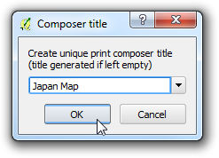
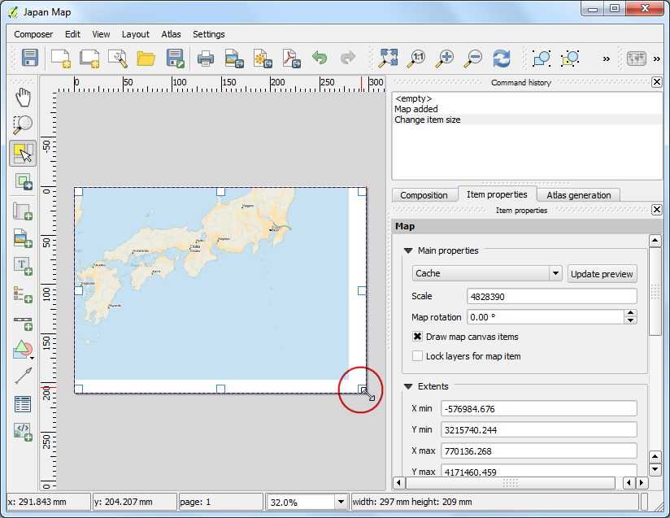

Topobladen en gescande kaarten voorzien van geoverwijzingen
[ Download PDF A4 Letter ]
De meeste GIS-projecten vereisen het voorzien van geoverwijzingen van rastergegevens. Voorzien van geoverwijzingen is het proces van het toewijzen van coördinaten uit de echte wereld aan elke pixel van het raster. Deze coördinaten worden veelal verkregen door veldonderzoek te doen - verzamelen van coördinaten met een GPS-apparaat voor een aantal eenvoudig te identificeren objecten op de afbeelding of de kaart. In sommige gevallen, waar u op zoek bent naar het digitaliseren van gescande kaarten, kunt u de coördinaten verkrijgen vanuit markeringen op de afbeelding van de kaart zelf. met behulp van die monster-coördinaten of GCP’s ( Grond ControlePunten ), wordt de afbeelding opnieuw geprojecteerd en passend gemaakt binnen het gekozen coördinatensysteem. In deze handleiding zal ik de concepten, strategieën en gereedschappen binnen QGIS bespreken om een zeer nauwkeurig geoverwijzing te bereiken.
Overzicht van de taak
We zullen een gescande kaart van zuidelijk India van 1870 gebruiken en die voorzien van geoverwijzingen met behulp van QGIS.
Andere vaardigheden die u zult leren
De gegevens ophalen
Hipkiss’s Scanned Old Maps website heeft een uitstekende verzameling gescande kaarten zonder auteursrechten die men voor onderzoek kan gebruiken.
Download de kaart 1870 map of southern India en sla die als een JPG-afbeelding op op uw harde schijf.
Voor het gemak kunt u direct een kopie van de gegevensset downloaden vanaf de link hieronder:
1870_southern_india.jpg
Procedure
1.Georeferencing in QGIS is done via the ‘Georeferencer GDAL’ plugin. This is a
core plugin - meaning it is already part of your QGIS installation. You just
need to enable it. Go to and enable the Georeferencer GDAL plugin in the
Installed tab. See Plug-ins gebruiken for more details on how to
work with plugins.

De plug-in is geïnstalleerd in het menu Raster. Klik op om de plug-in te openen.

Het venster van de plug-in is opgedeeld in 2 gedeelten. Het bovenste gedeelte is waar het raster zal worden weergegeven en in het onderste gedeelte zal een tabel verschijnen die uw GCP’s zal weergeven.

Nu zullen we onze JPG-afbeelding openen. Ga naar . Blader naar de gedownloade afbeelding van de gescande kaart en klik op Openen.

In het volgende scherm zult u worden gevraagd het coördinaten referentiesysteem (CRS) voor het raster te kiezen. Dit om de projectie en datum van uw controlepunten te specificeren. Als u de grond controlepunten heeft verzameld met behulp van een GPS-apparaat, zou u het CRS WGS84 hebben. Als u een gescande kaart zoals deze gaat voorzien van geoverwijzingen, kunt u de informatie voor het CRS uit de kaart zelf halen. Kijkend naar onze afbeelding van de kaart, staan de coördinaten in Lat/Long. er wordt geen informatie voor de datum gegeven, dus moeten we uitgaan van een toepasselijke. Omdat het India is en de kaart al vrij oud is, kunnen we er op wedden dat de datum Everest 1830 ons goede resultaten zal geven.

U zult zien dat de afbeelding wordt geladen in het bovenste gedeelte.

U kunt de knoppen voor Zoomen/Verschuiven in de werkbalk gebruiken om meer over de kaart te weten te komen.

Nu moeten we enkele coördinaten toewijzen aan enkele punten op deze kaart. Als u goed kijkt, zult u een coördinatenraster zien met markeringen. Met behulp van dat raster kunt u de X- en Y-coördinaten bepalen van de punten waar het raster kruist. Klik op Punt toevoegen in de werkbalk.

Voer, in het pop-upvenster, de coördinaten in. Onthoud dat X=longitude en Y=latitude. Klik op OK.

U zult merken dat de GCP-tabel nu een rij heeft met details van uw eerste GCP.

Voeg op dezelfde wijze nog ten minste 4 GCP’s toe, die de gehele kaart bedekken. Hoe meer punten u heeft, hoe meer nauwkeurig uw afbeelding wordt geregistreerd voor de doelcoördinaten.

Ga, als u eenmaal genoeg punten heeft, naar .

Kies, in het dialoogvenster Transformatie instellingen, het type Transformation type als Thin Plate Spline. Noem uw uitvoerraster 1870_southern_india_modified.tif. Kies EPSG:4326 als het doel-SRS zodat de resulterende afbeelding in een brede compatibele datum staat. Zorg er voor dat de optie Na afloop in QGIS laden is geselecteerd. KLik op OK.

Ga, terug in het venster van Georeferencer, naar . Dit zal het proces van opnieuw projecteren van de afbeelding starten met behulp van de GCP’s en het maken van het doelraster.

Als het proces eenmaal is voltooid, zult u de laag met geoverwijzingen zien geladen in QGIS.

Het voorzien van geoverwijzingen is nu voltooid. maar zoals altijd is het een goede gewoonte om uw werk te verifiëren. Hoe controleren we of onze geoverwijzingen nauwkeurig zijn? In dit geval: laad de shapefile met grenzen van het land vanaf een vertrouwde bron, zoals de gegevensset Natural Earth, en vergelijk ze. U zult zien dat ze aardig over elkaar zullen vallen. Er zijn enkele fouten en het kan verder worden verbeterd door meer controlepunten te nemen, de parameters voor de transformatie te wijzigen en een andere datum te proberen.

{kind=link}
{kind=link}